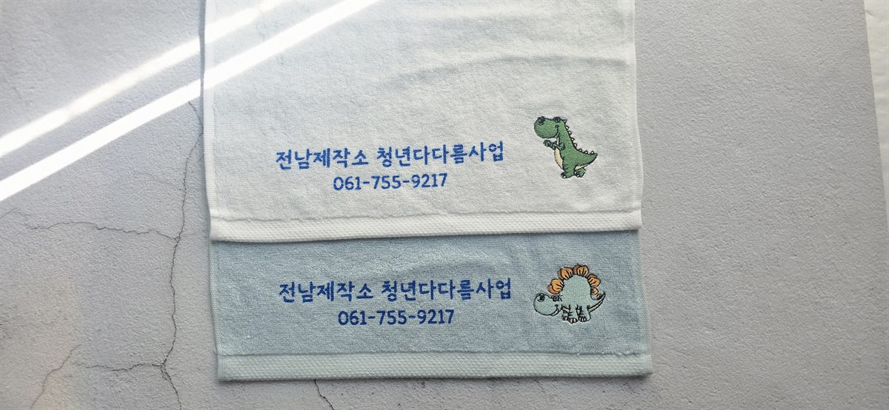

생활 위생 & 세탁 꿀팁
호텔수건 관리법
(주)수건메이커 위생 관리 가이드
욕실 수건, 얼마나 자주 바꿔야 할까? 호텔수건 세탁법 & 위생 관리 꿀팁 총정리
핵심 3줄 요약 (수건 수명을 2배 늘리는 골든 룰)
- 권장 교체 주기는 6개월 ~ 1년: 습한 욕실에 걸어두는 수건은 각질과 세균이 번식하기 쉬우므로 최대 1년 주기로 교체하는 것이 피부 건강에 좋습니다.
- 섬유유연제 절대 금지: 섬유유연제는 수건 올을 코팅해 흡수력을 떨어뜨리고 잔털 먼지를 유발합니다. 냄새가 날 땐 구연산이나 식초 1~2스푼을 활용하세요.
- 5장 이하 단독 울코스 세탁: 지퍼나 단추가 있는 일반 옷과 함께 빨면 수건 올이 뜯깁니다. 수건만 모아 물 높이를 높게 하여 단독 세탁해 주세요.

1. 한눈에 보는 호텔수건 표준 세탁·관리 기준표
| 관리 항목 | 올바른 방법 (O) | 피해야 할 방법 (X) |
|---|---|---|
| 세탁물 분류 | 수건만 5~7장 이하로 모아 단독 세탁 | 청바지·지퍼·벨크로 의류와 혼합 세탁 (올 풀림 발생) |
| 세제 및 유연제 | 중성 액체세제 정량 사용 (섬유유연제 무첨가) | 섬유유연제·표백제 과다 사용 (흡수력 저하 및 먼지 폭증) |
| 물 온도 및 코스 | 30~40℃ 미온수, 울코스(섬세코스), 물 높이 높게 | 고온 삶음 세탁 (면 섬유 및 뱀부 섬유 수축·손상) |
| 건조 방법 | 탈탈 털어 파일(올)을 세운 뒤 통풍 잘 되는 그늘 건조 | 젖은 수건을 빨래통에 겹쳐 방치 (세균·쉰내 원인) |
2. 새 수건을 샀을 때 '첫 세탁'은 어떻게 해야 할까요?
새로 구매한 호텔수건이나 선물 받은 답례품 수건에는 제조 공정 중 남아있는 미세한 잔털이 붙어 있을 수 있습니다. 첫 사용 전에는 세제를 아주 소량만 넣거나 물만으로 5장 이하씩 나누어 울코스(물 높이 최대)로 1~2회 단독 세탁해 주시면 잔털이 깔끔하게 빠져나가 먼지 없이 쾌적하게 쓰실 수 있습니다.
3. 올이 풀렸을 때는 절대 잡아당기지 마세요!
수건은 고리 모양의 파일(Loop) 조직으로 직조되어 있어, 한 올이 걸려 나왔을 때 손으로 잡아당기면 연결된 실이 줄줄이 풀려 버립니다. 올이 튀어나왔을 때는 당기지 마시고 가위로 튀어나온 부분만 살짝 잘라내 주시면 더 이상 풀리지 않고 깔끔하게 사용할 수 있습니다.
우리 집 욕실 수건 점검
1년 넘은 뻣뻣한 수건, 새 호텔수건으로 교체할 때가 되셨나요?
송월·무한·충무타올 및 기라로쉬 40수 코마사·180g 뱀부 타올을 총판 특가로 만나보세요.